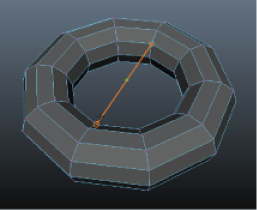
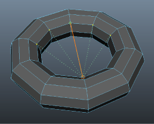

“目标焊接工具”(Target Weld Tool)可用于将一个顶点或边与另一个顶点或边进行合并。

可以通过以下方式访问
“四边形绘制工具”(Quad Draw Tool)：
- 单击 ，访问建模工具包(Modeling Toolkit)窗口的“工具”(Tools)部分。
- 从主菜单栏中，选择。
- 选定对象后，按 Shift 键并单击鼠标右键，然后从标记菜单中选择“目标焊接工具”(Target Weld Tool)。
- 选定顶点后，按 Shift 键并单击鼠标右键，然后从标记菜单中选择。
- 选定边后，按 Shift 键并单击鼠标右键，然后从标记菜单中选择。
- 选定面后，按 Shift 键并单击鼠标右键，然后从标记菜单中选择“目标焊接工具”(Target Weld Tool)。
有关如何使用该工具的详细信息，请参见相关主题。